在 YOLOv11n 上融合 P2 小目标检测层、SPD-Conv、C2PSA-MSDA 与 Focaler-DIoU，mAP@0.5 达到 84.9%，较基线提升 4.9 个百分点。
枇杷花蕾呈簇状密集生长，单个目标体积小且与背景叶片颜色相近，导致漏检与误检同时高发，影响疏花决策的科学性。 现有目标检测方法在无人机遥感视角下面临层层递进的局限。
步幅卷积和池化层在特征提取时会不可避免地丢失关键空间信息，小目标赖以辨识的边缘与纹理随之被削弱。
YOLOv11 等主流模型的改进多聚焦于单一结构或注意力机制，对复杂果园背景下低对比度小目标的跨层次感知能力不足。
CIoU 在小目标检测中还同时引入宽高比约束的干扰，对定位偏差与样本分布不均衡问题的缓解有限。
上述缺陷相互耦合，使检测精度、定位质量与模型规模难以同时兼顾。本文以 YOLOv11n（五档中参数量与计算量最小）为基线，在保持轻量化的前提下提升密集簇生小目标的检测能力。
无人机采集 850 张图像，筛选 600 张精细标注，按 7:2:1 划分，增强后训练集扩至 3 000 张。
新增 P2 小目标检测层保留高分辨率细节；7 个非步幅卷积层替换为 SPD-Conv，实现无损下采样。
把多尺度扩张注意力嵌入 C2PSA，扩张率 1～4 并行，覆盖 3×3 至 9×9 感受野。
替换 CIoU：按 IoU 区间动态调整样本权重，并直接优化预测框与真实框的中心点距离。
PSMF-YOLO 的 mAP@0.5、精确率与召回率较 YOLOv11n 分别高 4.9、2.3 与 4.2 个百分点；较表现最好的 YOLOv5s 仍高 0.8、0.1 与 0.6 个百分点。
输入图像先经骨干逐级压缩空间尺寸并扩张通道，再由颈部把深层语义与浅层细节融合，最后送入检测头产生预测框。
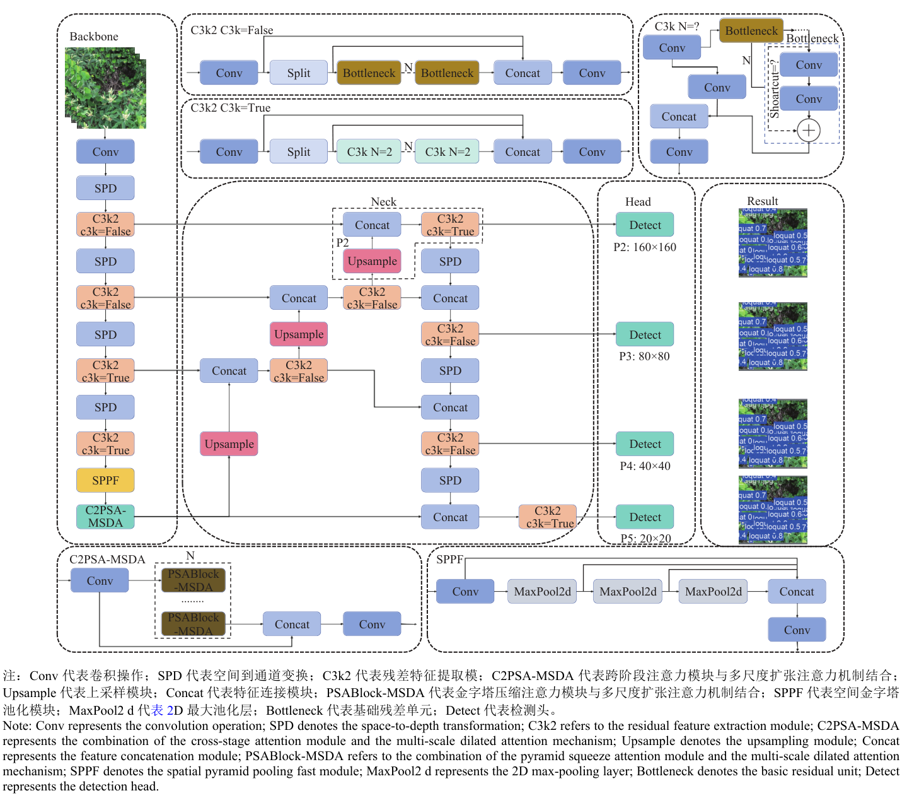
为小尺寸花蕾保留高分辨率的检测特征，对应较低下采样倍率的特征层。
P2 让花蕾的细微边缘得以进入检测分支，是消融中 mAP@0.5 增益最大的单项模块（+2.1 个百分点）。
| 检测层 | 输出特征图尺寸 |
|---|---|
| P2 | 160 × 160 |
| P3 | 80 × 80 |
| P4 | 40 × 40 |
| P5 | 20 × 20 |
输入统一为 640×640 像素，四尺度特征图依次为 160×160、80×80、40×40、20×20。
在下采样过程中保留全部空间信息，用于替换网络中的非步幅卷积层。
fi,j = X[ i : S : scale, j : S : scale ]
X 为输入特征图，S 为空间尺寸，scale 为缩放因子（本文取 2），fi,j 为按偏移 (i, j) 抽取的子特征图。
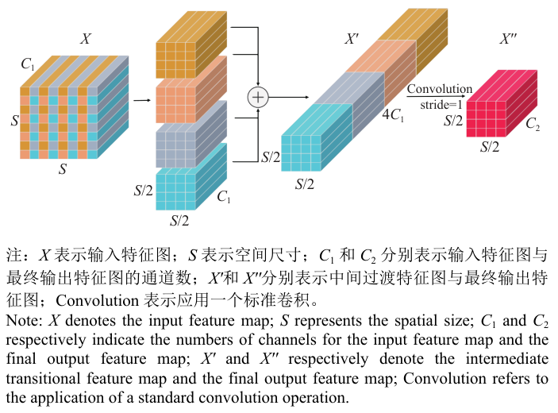
为小目标检测引入可控范围的全局上下文，弥补 C2PSA 模块感受野有限的问题。
不同扩张率的局部注意力并行学习，使 MSDA 同时刻画局部细节与较大范围的上下文语义。
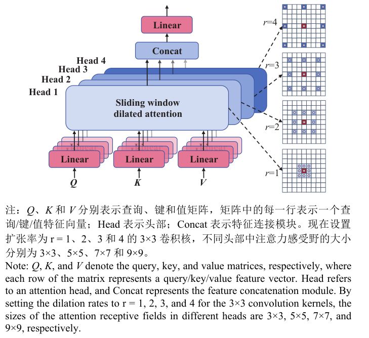
把 MSDA 嵌入 C2PSA 的注意力通路，同时建模局部细节与全局上下文。
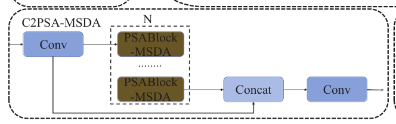
C2PSA 通过对不同空间位置和通道加权提升关键区域敏感度，但缺乏通过扩张卷积捕捉远距离依赖的能力。
MSDA 的多扩张率并行补上这一环，注意力权重可在多种尺度邻域内动态聚合，同时刻画局部细节与较大范围上下文。
模块位于骨干网络末端、SPPF 之后，接收深层语义特征，把增强后的特征送入颈部参与多尺度融合。
让边界框回归同时关注困难样本与中心点偏移，替换 YOLOv11 原有的 CIoU 损失。
低于下限阈值 d 的回归样本不被重视，高于上限阈值 u 的样本被完全关注，中间区间线性过渡，从而缓解数据分布不均衡并加快收敛。
DIoU 直接惩罚预测框与真实框中心点之间的欧氏距离，相较 CIoU 去掉了宽高比约束带来的额外干扰，梯度更新更为稳定。
两项综合后重点校正困难样本的位置误差；该损失接在检测头的回归分支上，与分类损失共同监督训练，输出最终检测框。
自建枇杷花蕾数据集与统一训练配置。
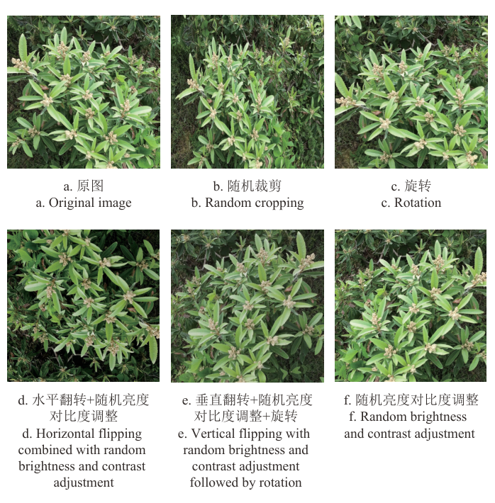
先在一张复杂果园场景图像上对 YOLO 系列模型的检测结果进行可视化。
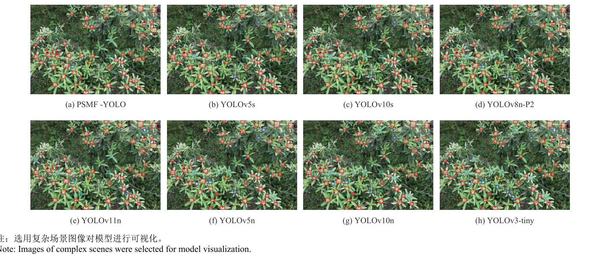
花蕾密集簇生、叶片遮挡明显的区域，各模型的检出完整程度差异清晰，基线 YOLOv11n 与 YOLOv3-tiny 的漏检更多。该场景下 PSMF-YOLO 正确检测 51 个、漏检 2 个、误检 1 个，而 YOLOv3-tiny 漏检 8 个、误检 7 个。
上述差异在统一训练的定量指标上得到印证。
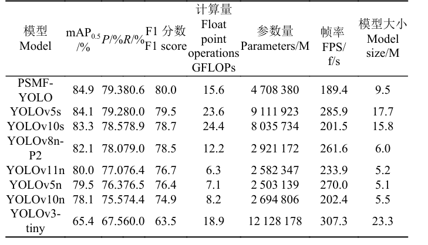
PSMF-YOLO 以 84.9% 的 mAP@0.5 位于首位，较基线 YOLOv11n 高 4.9 个百分点，较此前表现最好的 YOLOv5s 仍高 0.8 个百分点； P 79.3%、R 80.6% 同为最优，模型大小 9.5 MB、FPS 189.4，精度优势同时覆盖轻量级与中型模型两档。
选取 Faster R-CNN、SSD、RT-DETR 等经典检测框架进行跨架构对比。
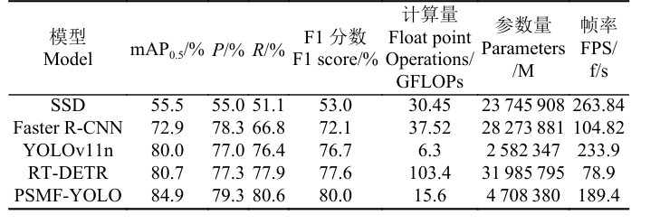
Faster R-CNN 的精确率虽比 YOLOv11n 高 1.3 个百分点，但其 mAP@0.5 仅为 72.9%，PSMF-YOLO 以 84.9% 领先 Faster R-CNN 12.0 个百分点； 而 Faster R-CNN 与 RT-DETR 的参数量分别是 PSMF-YOLO 的 6.0 倍和 6.8 倍，单阶段框架叠加结构改进在精度与部署开销之间取得了更好的平衡。
为厘清各模块的贡献，以 YOLOv11n 为基线逐个添加模块进行消融。
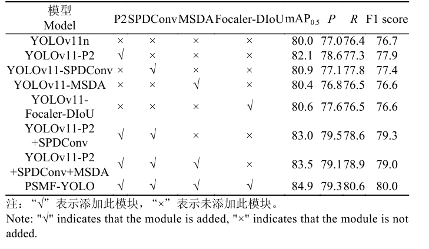
单独引入 P2 时 mAP@0.5、P 和 R 分别提高 2.1、1.6 和 0.9 个百分点，单独替换 SPDConv 时三项分别提高 0.9、0.1 和 1.4 个百分点；P2 与 SPDConv 结合后 mAP@0.5 升至 83.0%，加入 MSDA 后进一步升至 83.5%， Focaler-DIoU 单独加入则把 mAP@0.5 由 80.0% 提升到 80.6%。四模块齐备的 PSMF-YOLO 最终取得 84.9%、79.3% 与 80.6%，较基线分别提高 4.9、2.3 和 4.2 个百分点。
将表中 8 个变体的 P-R 曲线绘制在同一图中。
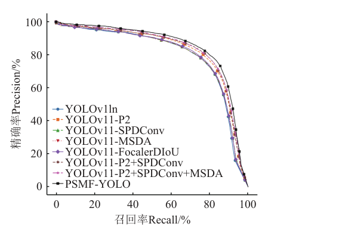
从逐模块消融到整体 P-R 曲线，各模块的增益在统一评价口径下得到相互印证。
为确认模型规模仍处于轻量范围，统计 YOLOv11 系列各规模模型与 PSMF-YOLO 的参数量。
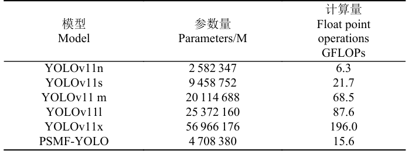
PSMF-YOLO 参数量 4.71M，高于 YOLOv11n 的 2.58M，但明显低于 YOLOv11s 的 9.46M、YOLOv11m 的 20.11M、YOLOv11l 的 25.37M 与 YOLOv11x 的 56.97M； GFLOPs 为 15.6，说明检测精度提升的同时模型规模仍保持在轻量化部署的可接受范围内。
对比 YOLOv11n 与 PSMF-YOLO 的训练框损失、训练分类损失、验证框损失与验证分类损失。
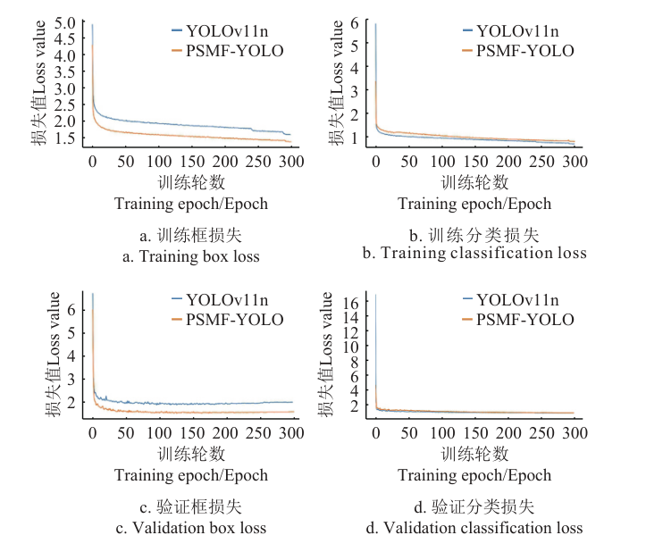
训练与验证的四组曲线共同说明：结构改进没有牺牲收敛稳定性，反而带来更快的收敛速度和更优的整体检测性能。
在同一复杂场景下，将 PSMF-YOLO 与 SSD、Faster R-CNN、RT-DETR、YOLOv11n 的检测结果并排可视化。
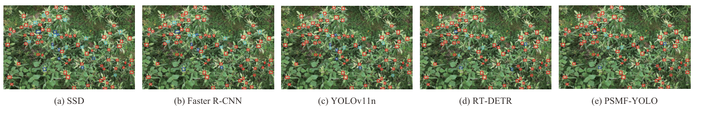
改进模型在密集花蕾区域的定位更准、覆盖更全，验证了 PSMF-YOLO 在复杂果园场景下的检测鲁棒性。
将 P2 小目标检测层与 SPD-Conv 组合成信息保留链路，以空间到深度的无损下采样配合浅层高分辨率特征拼接，使 mAP@0.5 较基线提升 4.9 个百分点，可供小目标检测的特征保留设计参考学习。
设计 C2PSA-MSDA 模块把多尺度扩张注意力嵌入跨阶段注意力结构，用四种扩张率并行的滑动窗口注意力覆盖 3×3 至 9×9 感受野，统一了局部细节与全局上下文的建模。
以 Focaler-DIoU 重构边界框回归损失，将按区间动态加权的样本难度与中心点距离约束相结合，配合逐模块消融、P-R 曲线与多模型检测效果可视化相互印证，实验完整且说服力强。
从特征保留、上下文建模到边界框回归，三方面协同改进，在保持轻量化的前提下提升密集簇生小目标的检测能力。